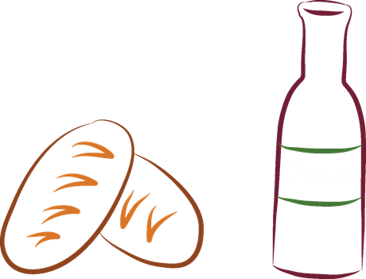
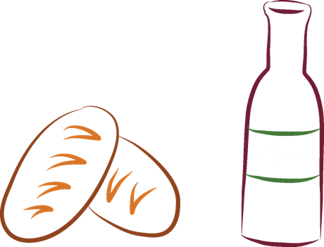
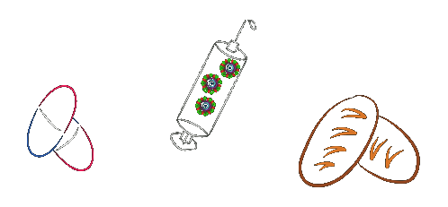
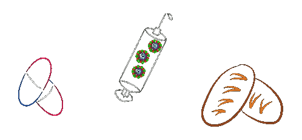

Você sabe o que é biotecnologia? Parece uma coisa tão moderna, né? Mas na verdade, o ser humano faz uso da biotecnologia desde os primórdios da humanidade. Processos biotecnológicos são usados para, por exemplo, fabricar pão, vinho e cerveja, produtos consumidos por populações humanas há 8.000 anos atrás!!!
 

 
